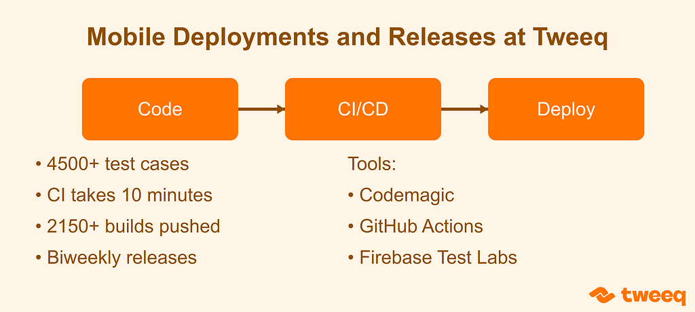
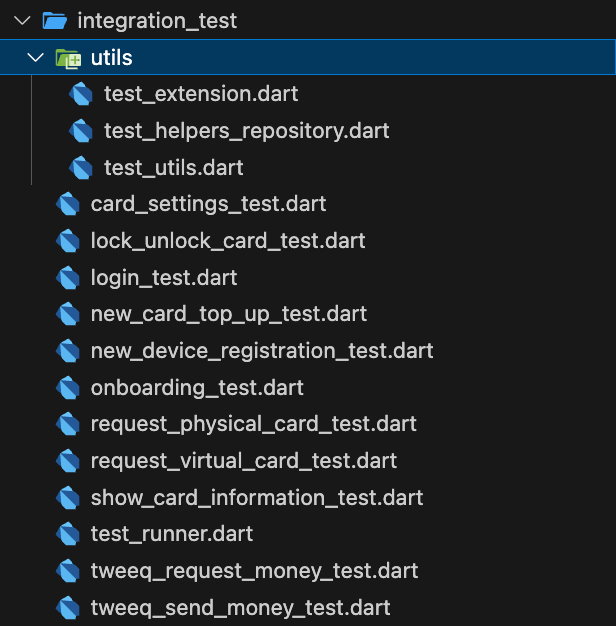

At Tweeq, we use a continuous integration/continuous deployment workflow to make the mobile development process easier and more streamlined. This blog post will talk about our workflow and how it makes our lives easier.

TL;DR
- 4500 test cases run with each commit :D.
- CI takes 10 minutes to run!
- 2150 builds pushed to stores with a team of 2–3 developers.
- 35 versions deployed to the public, our releases happen each 2 weeks!
Developing & Building the App
Codemagic
Codemagic is by far the easiest way to get a really good workflow setup, yet it is so customizable. Usually people start with the workflow editor and then use the codemagic.yaml once they grow a little or realize that having things in the same repository makes a lot of sense. For more information about where this came from, read our CTO’s blog post about “Building a Modern Payments Platform”.
We now use the codemagic.yaml approach which allows any developer to edit or enhance without the need for going out of their editors. Any change is a pull request away, and a small JIRA task 👀.
Codemagic gives you access to macOS machines that have most of the tools you need for mobile development. Codemagic is well-suited for a range of ways of development, cross-platform (Flutter, React Native, Unity, etc…) and native (iOS and Android). But they started with Flutter and they made the experience really easy. That is one of the reasons we chose them.
We have three Codemagic workflows, and each has their own unique purpose. It might seem like an overkill but for our use case it is really a good fit in our opinion:
- Tweeq Testing workflow: builds the test version of our app for internal usage. It connects to the staging environment and it is pushed to the app stores for internal testing. It also has an internal mascot called “shammam” 😎.
- Tweeq Release Integration Tests workflow: builds a release version and runs integration tests on it, more on that later. If it succeeds, the next workflow is triggered.
- Tweeq Release workflow: builds the production version of the app and pushes it to the stores for internal testing. Then, we promote a specific build to production for users like you to enjoy!
GitHub Actions
Since we do trunk-based development, we use GitHub Actions to make sure code we merge is always runnable and works as expected via tests and some checks we invented. It also makes sure developers follow the best practices we have via analyzer rules. It also checks that the developer used build_runner to build any generated files and committed them to the repository.
We have two workflows that run on ubuntu-latest-16-cores and we chose this specific machine to make the process faster. The workflow now takes around 10 minutes and it does the following:
- Around 4500+ test cases (unit and widget (unit test for ui) tests).
- Generate files using build_runner.
Now you might ask why we have two workflows, and that is a great question. We run one with every pull request and the other one is run in the main branch. The one for the pull request makes sure code merged is runnable and good according to the workflow. Now about the other one we run in the main branch, it is used for making sure things are still good, in case something is merged to the main branch directly which is very very very rare and near never. But in case that happens, we have that in place.
Now after this workflow we run in the main branch successfully, it creates a Git tag and pushes it to GitHub. The tag is in the following format: build_version+build_number. The build_version is something like 1.7.0 and is fetched from the pubspec.yaml. and the build_number is something like 2150. So a tag for the example above is like this: 1.7.0+2150.
This tag is the trigger we have set up in the codemagic.yaml files we have. Remember we have 3 files and we run two files based on a tag trigger and one of them is triggered after the integration tests one is run. This makes sure we minimize the bugs that pass through our processes. Of course, you can’t make sure 100% you have no bugs, but this gives you more confidence.
Integration Tests
This type of testing is the most expensive to maintain. It takes so much time that it might require a team member or more to commit to maintaining it. And since this test type is really expensive, we just do it for the most important flows we have. We did integration tests for ten flows as shown in the figure below:

We run those tests two times, first time in Codemagic, and the second time in Firebase Test Labs. Codemagic runs it on iOS only, and only on one device. And Firebase Test Labs runs it on a matrix of devices.
The Benefits
This workflow makes sure we minimize bugs shipped to production. And it also makes it easier to trace the code that caused those bugs. Comparing deployments using tags on GitHub is easier now, since it matches the things we pushed to people. If a customer is complaining about an issue, we just need the build_version and the build_number. And compare it with the last deployment. Sometimes the customer knows when the issue started to happen so we can even minimize the search area.
I believe that looking through two weeks of code is better than randomly guessing when the bug was introduced. Especially that we squash and merge when merging a PR, so we can get the context of the changes easily by looking at the PR itself.
Deploying the App
After the app is developed, built and pushed to the app stores, the deployment part starts! We do a deployment every sprint, aka 2 weeks. The way we set up the Git tags and the builds allows for easier communication between developers, customers, and product managers. That is since we share the same unique information that specifies the changes introduced.
The next step is to choose a build to deploy to the public. This usually happens after our sprint ends, and we ask for a sign-off from the product team to deploy the app.
Notice how we used the “deployment” word and not the “release”? We believe developers usually mix between those two terms. Let us clear things up in terms of mobile development:
Deployment: is the pushing of an app binary to our users through app stores.
Release: is making the code we “deployed” available to users.
Since we do trunk-based development, we use feature flags to “release” the features we introduced through our “deployment” to our users.
Conculsion
And that is how we do mobile development at Tweeq! I believe that this workflow of running tests makes our Mobile CI/CD robust. Share your thoughts on the workflow we have and perhaps share improvements you would like to see.
How We Do Mobile Deployments and Releases at Tweeq was originally published in Tweeq Engineering on Medium, where people are continuing the conversation by highlighting and responding to this story.